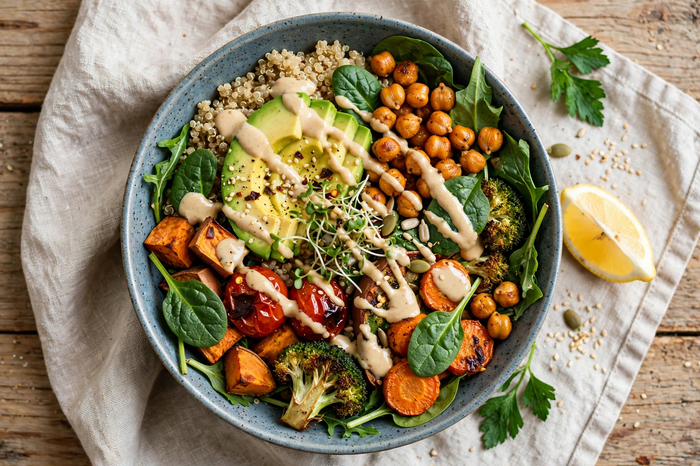

| Basis | Foods derived from plants: vegetables, grains, legumes, fruits, nuts, seeds |
| Variants | Vegan, vegetarian, flexitarian, whole-food plant-based |
| Motivations | Health, environment, animal welfare |
| Key nutrient watch | Vitamin B12, vitamin D, omega-3, iron, protein |

A plant-based diet is a diet consisting mostly or entirely of plant-based foods — vegetables, fruits, whole grains, legumes, nuts and seeds — with little or no animal products. The term is used flexibly: it may describe a fully vegan diet, or eating patterns such as vegetarian and flexitarian diets in which plants predominate. "Whole-food plant-based" (WFPB) further emphasises minimally processed foods and excludes refined oils, flours and sugars.
Dietetic associations, including the Academy of Nutrition and Dietetics, hold that appropriately planned vegetarian and vegan diets are nutritionally adequate and may reduce risk of ischaemic heart disease, type 2 diabetes, hypertension and some cancers. Observational cohorts such as the Adventist Health Studies associate plant-centred diets with lower BMI and cardiovascular mortality. Planning matters chiefly for vitamin B12 (absent from unfortified plant foods), and for vitamin D, long-chain omega-3 fatty acids, iron, zinc, iodine and calcium.
Life-cycle analyses consistently find plant foods have lower greenhouse-gas emissions, land use and water demand per unit of protein or calorie than animal foods, especially ruminant meat. A widely cited 2018 analysis in Science by Poore and Nemecek estimated food production causes about a quarter of anthropogenic emissions and that shifting to plant-rich diets is among the most effective individual-level climate measures.
Plant-based eating has ancient roots in religious traditions (Hindu, Jain and Buddhist ahimsa; Seventh-day Adventist practice) and 19th-century vegetarian movements. The modern term gained popularity in the 1980s, notably through T. Colin Campbell's work, distinguishing a health-focused "plant-based" framing from ethically defined veganism.